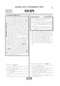

문제지

전국연합학력평가 · 시·도교육청 주관
2025년 3월 고3 학력평가 국어 화법과작문 1등급컷은 원점수 80점(추정), 표준점수 최고점은 159점입니다.
원점수 1등급컷은 공식 발표값이 아니라 EBSi·입시기관 값입니다. 등급별 값은 등급컷 표, 출처 구분은 데이터 원칙에 있습니다.

시험지를 먼저 풀어 보세요. 등급컷·표준점수·난이도는 흐리게 가려 뒀어요.
| 등급 | 원점수 | 표준점수 | 백분위 | 누적 |
|---|---|---|---|---|
| 1 | 80 | 136 | 96 | 4.03% |
| 2 | 68 | 126 | 89 | 11.79% |
| 3 | 59 | 116 | 77 | 24% |
| 4 | 49 | 105 | 60 | 40.86% |
| 5 | 38 | 94 | 41 | 60.13% |
| 6 | 29 | 83 | 23 | 78.12% |
| 7 | 20 | 74 | 11 | 90.05% |
| 8 | 15 | 68 | 4 | 96.21% |
등급별 컷 · 입시기관 2곳 원점수 추정 종합(이투스·대성마이맥) · 공통+선택 점수 조합에 따라 다를 수 있음 · 만점 100점
| 등급 | 표준점수 이상 | 인원(명) | 비율 |
|---|---|---|---|
| 1 | 136 | 14,103 | 4.03% |
| 2 | 126 | 27,148 | 7.76% |
| 3 | 116 | 42,692 | 12.21% |
| 4 | 105 | 58,984 | 16.86% |
| 5 | 94 | 67,410 | 19.27% |
| 6 | 83 | 62,909 | 17.99% |
| 7 | 74 | 41,741 | 11.93% |
| 8 | 68 | 21,534 | 6.16% |
| 9 | 50 | 13,242 | 3.79% |
국어 영역 전체 응시자 기준이에요.
출처: 시·도교육청이 공개한 전국연합학력평가 성적 분석·통계자료(공개 자료 보기).
EBSi 응답자 기준으로 가장 많이 틀린 문항은 33번(2점)이고, 오답률은 83.1%입니다. 상위 15문항 중 4문항은 정답보다 한 오답을 고른 사람이 더 많았습니다(33번: 정답 ⑤ 16.9%, ② 35.6%). 오답률 50%를 넘은 문항은 12개입니다.
| 순위 | 문항 | 배점 | 오답률 | 정답 | 많이 고른 오답 |
|---|---|---|---|---|---|
| 1 | 33번 | 2점 | 83.1% | ⑤ | ② 35.6% |
| 2 | 12번 | 3점 | 79.4% | ⑤ | ② 29% |
| 3 | 8번 | 3점 | 70.8% | ⑤ | ④ 23.5% |
| 4 | 26번 | 3점 | 70.7% | ① | ③ 37.5% |
| 5 | 9번 | 2점 | 69.8% | ① | ⑤ 36.2% |
| 6 | 29번 | 2점 | 68.5% | ① | ③ 22.7% |
| 7 | 7번 | 3점 | 62% | ② | ⑤ 21.8% |
| 8 | 17번 | 3점 | 60.6% | ⑤ | ③ 19.9% |
| 9 | 15번 | 2점 | 59.5% | ① | ③ 20.5% |
| 10 | 36번 | 2점 | 56.8% | ⑤ | ② 31.5% |
| 11 | 40번 | 3점 | 56% | ③ | ⑤ 31.2% |
| 12 | 16번 | 2점 | 54.3% | ① | ④ 23.5% |
| 13 | 6번 | 2점 | 49.6% | ③ | ⑤ 19.5% |
| 14 | 14번 | 2점 | 49.3% | ② | ③ 18% |
| 15 | 34번 | 3점 | 49.1% | ② | ③ 14.7% |
EBSi 가채점 응답자 기준 · 전 문항 중 오답률 상위 15문항
출처: EBSi 역대 등급컷·오답률 공개 화면. 가채점에 참여한 EBSi 이용자 응답이라 전체 응시자 정답률과는 다를 수 있습니다.
발행 기관: 시·도교육청(전국연합학력평가). 파일 위치: 이 사이트가 보관한 사본. 저작권은 발행 기관에 있습니다. 원본과 다르거나 게시 중단이 필요하면 연락처로 알려 주세요. 등급컷 출처 구분은 데이터 원칙에서 설명합니다.
막대 색은 역대 대비 난이도 · 진한 막대가 이 시험 · 막대를 누르면 그 회차로 이동
| 회차 | 1등급컷 | 표점 최고 | 1등급 표점 | 난이도 |
|---|---|---|---|---|
| 3월 학평2025년 고3이 시험 | 80 | 159 | 136 | 매우 어려움 |
| 10월 학평2024년 고3 | 97 | 134 | 129 | 쉬움 |
| 7월 학평2024년 고3 | 96 | 135 | 130 | 쉬움 |
| 3월 학평2024년 고3 | 86 | 150 | 133 | 어려움 |
| 10월 학평2023년 고3 | 98 | 128 | 126 | 매우 쉬움 |
| 7월 학평2023년 고3 | 90 | 141 | 132 | 어려움 |
| 4월 학평2023년 고3 | 98 | 137 | 130 | 매우 쉬움 |
| 3월 학평2023년 고3 | 89 | 146 | 133 | 보통 |
| 10월 학평2022년 고3 | 90 | 141 | 129 | 보통 |
| 7월 학평2022년 고3 | 94 | 134 | 129 | 보통 |
공통과목 독서는 자기 결정성 이론으로 독서 동기의 유형을 설명한 독서론(1~3번), (가) 조성에 얽매이지 않는 음악을 만든 쇤베르크와 (나) 후설의 현상학으로 12음 기법의 의미를 밝힌 레보비츠를 묶은 주제 통합형 예술 지문(4~9번), 기업의 증권 발행과 청약 절차를 다룬 법·경제 지문(10~13번), 혈압과 심장박출량·말초 혈관 저항의 관계를 다룬 과학 지문(14~17번)으로 구성되었습니다.
독서에서 가장 많이 틀린 12번(3점, 79.4%)은 증권 신고서 누락과 미공개 정보 이용이 얽힌 배터리 제조사의 <보기> 사례를 판단하는 문항, 8번(3점, 70.8%)은 쇤베르크와 레보비츠의 관점으로 <보기>를 이해하는 문항, 9번(69.8%)은 같은 지문의 어휘 문항이었습니다.
문학은 이동하의 소설 「저당 잡힌 사내」(18~21번), 권섭의 가사 「영삼별곡」과 김매순의 「풍서기」를 묶은 갈래 복합(22~26번), 작자 미상의 고전소설 「소대성전」(27~30번), 김기림 「아스팔트」와 김명인 「봄길」을 묶은 현대시(31~34번)로 구성되었습니다.
이 회차 국어에서 가장 많이 틀린 33번(2점, 83.1%)은 현대시의 ⓐ~ⓒ 구절을 이해하는 문항이었고, 갈래 복합의 26번(70.7%)과 「소대성전」의 29번(68.5%)도 오답률이 높았습니다.
화법과 작문은 접붙이기의 개념과 방법을 소개하는 원예 동아리의 발표(35~37번), 모둠 활동의 문제와 해결 방안을 다룬 학생들의 대화와 교지 기고문(38~42번), 환경을 고려한 자외선 차단제 사용을 알리는 초고(43~45번)로 구성되었습니다.
선택과목에서 가장 많이 틀린 36번(2점, 56.8%)은 발표 내용과 관련된 문항으로, 응답의 31.5%가 한 오답을 골랐습니다.
화법과 작문에서 가장 많이 틀린 36번도 오답률이 56.8%에 그쳐, 이 회차 국어의 등급은 공통 독서 12번과 문학 33번이 갈랐습니다. 3월 학력평가로는 매우 어려운 국어였으므로, 점수보다 두 문항에서 어떤 판단이 어긋났는지를 확인하는 데 초점을 두는 것이 좋습니다.